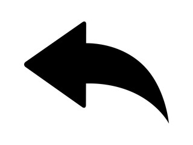
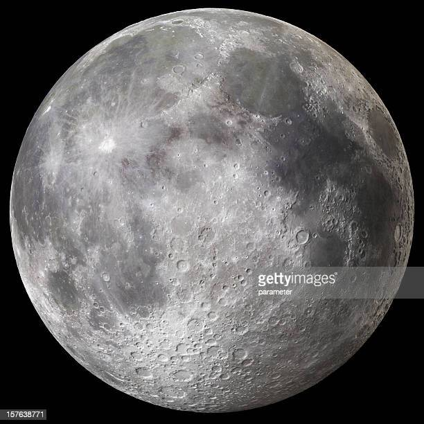

All Bookmarks
...

See SpaceX
@seeSpaceXMagic

· May 05
...
Axiom Space bought seats on a SpaceX rocket to be NASA guests in orbit as the agency extends efforts to commercialize spaceflight.
spaceXSpaceShipRise.ca
Jared Isaacman, who flew in the companys capsule last year.
SpaceX is the first private company to develop a liquid-propellant rocket that has reached orbit; to launch SpaceX offers commercial satellite-based internet...
-
 4,020
4,020 -


SpaceX-Rati
@SpaceX-Contellations
· Mar 04
...
The Moon is Earth's only natural satellite. It is the fifth largest satellite in the Solar System and the largest and most massive relative to its parent planet with a diameter about one-quarter that of Earth.

moon-Rati.com
The Moon orbits Earth at an average distance of 384,400 km (238,900 mi), or about 30 times Earth's diameter.
The most widely accepted origin explanation posits that the Moon formed 4.51 billion years ago, not long after Earth, out of the debris from a giant impact between the planet and a hypothesized Mars-sized body called Theia. It then receded to a wider orbit because of tidal interaction with Earth and Moon...
-
45.7K
-